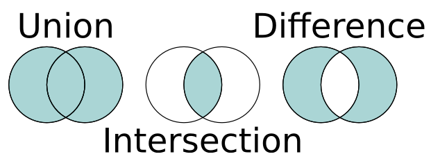

Week 4 Variant Annotation
In the - for now - final Galaxy workflow step for analyzing our patient, we are going to annotate all our filtered variants to determine the severity of the variations we determined last time with the LoFreq tool. This involves comparing all our variants against a number of databases containing annotation data for known variants. We will use our filtered VCF-file resulting from LoFreq so we need to upload our newly created VCF file to Galaxy. Make sure that Galaxy recognizes the file type by selecting the correct file type when uploading or change it afterwards using the Edit attributes button.
4.1 SnpEff and SnpSift
There are multiple methods of annotating found variants. Most of these will require extra data to predict the effect of a variant or to compare it with a known set of variants. Here we use a set of tools that does both types of annotation. See for further details and a manual the Github documentation.
SnpEff: is a variant annotation and effect prediction tool. It annotates and predicts the effects of genetic variants (such as amino acid changes)SnpSift: is a toolbox that allows you to filter and manipulate annotated files.- actually, this tool also annotates variants using a variety of data sources, for which we will use it.
Both tools are available in Galaxy with numerous sub-tools depending on the task that you want to do. To get the most information for each variant, we will perform three annotation runs:
Step 1: Using SnpEff to annotate variants using the GRCh38.86 database adding information related to the gene, transcript and protein that are affected by this variant. This results in a lot of extra data that is all documented in the changed VCF header.
For example, given the following variant as input:
chr1 237550644 . C A 91.0 PASS DP=578;AF=0.017301;SB=1;DP4=252,316,5,5
This is the result after SnpEff:
chr1 237550644 . C A 91.0 PASS DP=578;AF=0.017301;SB=1;DP4=252,316,5,5;ANN=A|missense_variant|MODERATE|RYR2|ENSG00000198626|transcript|ENST00000366574.6|protein_coding|27/105|c.3167C>A|p.Thr1056Lys|3484/16562|3167/14904|1056/4967||,A|missense_variant|MODERATE|RYR2|ENSG00000198626|transcript|ENST00000360064.7|protein_coding|25/103|c.3119C>A|p.Thr1040Lys|3119/14850|3119/14850|1040/4949||WARNING_TRANSCRIPT_NO_START_CODON,A|downstream_gene_variant|MODIFIER|SNORA25|ENSG00000252290|transcript|ENST00000516481.1|snoRNA||n.*4396G>T|||||4396|
All details are added in the ANN field. See the description in the VCF header for a field-by-field explanation of the values.
Running SnpEff:
- Select the
SnpEff Variant effect and annotationtool from theVariant Callingtool menu in Galaxy. - Select the uploaded VCF file containing the variants filtered for the cardiopanel genes.
- Check if the by default selected
GRCh38.86Genome Source is selected. - All other settings can be left default, execute the tool.
The result consists of two files: an annotated VCF file and a web-report on all the variants and their predicted effects.
Step 2: Adding dbSnp entries using SnpSift. The dbSnp database contains information on known variants. The version that also includes clinical significance (combining the ClinVar database) is available for the SnpSift tool in Galaxy.
Running SnpSift for dbsnp:
- SnpSift requires the
dbSnpdatabase to be available in your history:- In Galaxy, go to
Shared Data(top menu) –>Data Libraries–>dbSnplibrary - Select both files shown there and use the
Add to history–>as datasetsoption to get them in your own history
- In Galaxy, go to
- Select the
SnpSift Annotate SNPs from dbSnptool from theVariant Callingtool menu in Galaxy.- Note: this is a different tool from the
dbNSFPdatabase, see step #3 below.
- Note: this is a different tool from the
- Select the output VCF file created by SnpEff in step #1 as the
Variant input file. - Select the
dbSnp_clinvar.vcf.gzfile as theVCF File with ID field annotated. - For
Fields to annotateselect theAdd also INFO fieldsoption and execute the tool.
This tool adds annotations in two columns. First, the ID column will describe the dbSnp ID (rs number) that can be used to look up the variant. Second, the INFO column is expanded with (a lot of) extra information if the variant is known. For instance, the ClinVar data might report on diseases the variant is related to, such as:
CLNDN=Cardiovascular_phenotype|Charcot-Marie-Tooth_disease|Lipoatrophy_with_Diabetes,_Hepatic_Steatosis,_Hypertrophic_Cardiomyopathy,_and_Leukomelanodermic_Papules
Step 3: Annotating using the dbNSFP database and SnpSift. The dbNSFP database is a huge collection (over 300GB of text files) of annotation sources combined into a single database. The SnpSift tool can compare our variants with known variants from all of these annotation sources and - like the first few steps - adds them to our VCF file. As you can expect, our VCF file will become very large and most likely unreadable. Therefore, we re-use the VCF file gained from step #1 instead of the VCF file from SnpSift in step #2. We can later combine the data after parsing both files separately.
Running SnpSift for dbNSFP:
- Select the
SnpSift dbNSFPtool from theVariant Callingtool menu in Galaxy. - Use the VCF file from step #1 as input
- Select the locally available
GRCh38 dbNSFP4.3cGenome database - Select all options for the
Annotate withoption
Note that the tool description lists output not available for selection, we will look into the specifics of all selected databases later on.
4.1.1 Assignment
- Create a table in your report where you summarize the added annotation data (very!) briefly;
- The database where the data comes from
- The result or value (is it an identifier, a percentage, etc.).
- Hint: you can add formatted tables in markdown with some syntax which is easiest generated at https://www.tablesgenerator.com
The VCF header only describes the names of the databases the data originates from and does not give a clear explanation. There might be a single source for the documentation (please let us know if you find it!), but for now the best method of getting information about the added data is:
- Step #1: the output of the first step also includes a web report that at least gives more details on the results. Either use your biological knowledge or search for terms if they’re unclear
- Step #2: data from the
dbSnpdatabase comes from the ‘ClinVar’ version of this database, which is documented on its NCBI website. - Step #3: for the
dbNSFPdatabase there are descriptions available on the online version:- Go to the online dbNSFP instance, select the Academic option and click Connect.
- If you hover over any of the selectable Variant fields, you can read a brief description of the data that is added.
- Note that this is for dbNSFP version 4.4a and we use version 4.3c (very minor differences)
4.2 Programming Assignment; Analyzing Variant Annotation
Given the possibly hundreds of annotated variants with data from multiple data sources, it’s time to do one last filtering on the data to come up with a list of variants of which we can say, with some certainty, that they are related to the condition. As with the VCF-filter tool that we’ve written, here too will we check each line and decide if it is a variant worth reporting on. Whether we want to keep a variant or not depends on the annotation added by SnpEff/SnpSift and it is your task to come up with an approach for combining data from these data sources to rank the annotated variants.
4.2.1 Assignment 10; Data Preparation
This programming assignment asks to take another good look at the data, but now in R to see if everything is in a suitable format to eventually sort the data and extract a top-set of variants related to the condition. As you have seen, all data is essentially stored in a single column that contains multiple separators (such as | and ;). You need to think of and implement a good strategy to convert all this information into a workable data format, such as a data frame.
There are a few caveats though that can also be seen when looking at the SnpEff report (the ‘stats’ output). For instance, there are two lines in the overview table that describe the amount of variants and the amount of hits in the SnpEff database:
Number of variants (before filter) 145Number of effects 1,332
Which means that on average every variant has about 10 (!) hits of which all data is placed in the INFO column (most notably in the ANN part of the INFO column). This is caused most often by multiple transcripts (alternative splicing) being affected by this variant. This makes it very difficult to parse and therefore this section gives tips and example code to assist in that task. With this much data from three different steps it is too complex to assess in a single run so we will assess annotation data step by step.
4.2.1.1 Step #1 & #2; SnpEff ANN data and SnpSift ClinVar data
According to the VCF header, the ANN data contains the values explained in the SnpEff documentation. Some, or all of them could be of interest. There is a Galaxy tool available to extract interesting fields from the added data.
- Select the
SnpSift Extract Fields from a VCF file into a tabular filetool from the tool menu- the tool help or this manual can provide more details
- Select the annotated VCF file as input
- Provide the names of the columns of interest. For instance, the following could be used as a query for the ‘Fields to extract’:
CHROM POS REF ALT ANN[*].EFFECT ANN[*].IMPACT ANN[*].GENE ANN[*].FEATURE ANN[*].FEATUREID ANN[*].BIOTYPE ANN[*].ERRORS CLNDN CLNSIG- Add or remove any other column you find interesting to the above query.
- Enable the ‘One effect per line’ option
- Run the tool and download the resulting tabular file for analysis in R
- The resulting file contains as many rows as effects reported by SnpEff (1332 in this example)
Note: always include the CHROM POS REF ALT columns which are needed to identify the variant in the original file.
4.2.1.2 Step #3; SnpSift dbNSFP
Similar to the previous step, extract the fields of interest using the SnpSift Extract Fields from a VCF file into a tabular file tool. The dbNSFP entries are all prefixed with dbNSFP_, for instance: dbNSFP_MutationAssessor_score and dbNSFP_SIFT_pred. Once done, download this tabular file too for further analysis.
4.2.2 Assignment 11; Finding Variants of Interest
Given the knowledge we have on the data stored in the two dataframes, we can now formulate questions for this data to find a set of variants which are most likely linked to the cardiomyopathy condition. This condition cannot be identified by a single variant but is often caused by several variants and the combination not only determines if someone suffers from cardiomyopathy but also how badly their condition is.
The physician who diagnoses patients uses the genetic information of the found variants as one of the sources for confirming the condition. However, presenting a list of 100+ variant positions with a list of numbers from some tools is not how that works in practice; we need to present a short, ordered list of variants that can be related to the condition.
Next, define your own sorting, filtering, selecting, etc. procedure to filter and order a top-list of variants that you’d present as aid to a diagnoses. For instance, you might have a variant that had a hit in the ClinVar database which directly links it to cardiomyopathy, this should probably be somewhere around the top of your list. Again, look at the output description that you’ve written earlier to come up with combination(s) of values. There is no golden standard for selecting these variants so it is very important to properly document and argument your decisions.
As an end product for this step you are expected to include a nice table including at least 10 variants in your report that contains all relevant information for each of them, i.e. the chromomsome, position, reference and variant nucleotides, gene name and all relevant scores.
For all of your variants, try to (briefly!) answer the following questions for each variant:
- Can you find a link between cardiomyopathy and the variant?
- What is the effect of the variant?
- Is it validated?
- Are there scientific studies supporting the evidence?
- What does the score indicate?
- What else can you find about the variant?
You can use the following online sources among others:
4.3 Galaxy Workflow
Now that we have completed our analysis steps we can create a Galaxy workflow. In this workflow we will combine all the tools that we have used in Galaxy (FastQ files –> SnpEff/SnpSift annotated output) so that when we receive new patient data in the future we can analyze that dataset with a single click!
There are many online resources giving instructions and examples for creating Galaxy workflows, use these resources to create a workflow including all used analysis tools. Note that you can convert Galaxy histories into workflow(s), which saves a lot of time with configuring all the tools from that workfow.
Once you have a workflow, make sure it is shared with your project partner and create a screenshot of it for your report (try to fit all tools in a single image).
Note; this assignment has a very low priority and should be done once you are satisfied with all other parts of your work! At the bare minimum, open your last history (including SnpEff/SnpSift) and explore/ play with the Extract Workflow option.
4.4 Comparative Genomics [Optional]
With the complete analysis nicely packaged into a single workflow, one thing that we can use it for is to do comparative genomics. This term contains many different types of comparisons and is described on Wikipedia as
Comparative genomics is a field of biological research in which the genomic features of different organisms are compared.
These features can be of many types and in our case they are the variants. A simple tool is available in Galaxy called VCF-VCFintersect that performs either intersection or union on two VCF datasets containing variant data. This tool compares two VCF files and retains either the shared variants (intersection) or all variants combined (union) as shown in the diagram below.

Assignment
- Process another sample (use a new history) by running your complete workflow.
- Note that you have to filter the resulting SnpEff output (which contains the same data as the VCF file appended with annotation data) with the BED-data. Alternatively, you can stop after the LoFreq tool, download the VCF file, filter this using the BED-data and re-upload the filtered VCF file before continuing with SnpEff
- Calculate the following three statistics:
- The number of variants unique to patient 1
- The number of variants unique to patient 2
- The number of variants found in both patients
- Create a VENN-diagram (like the image above) displaying these numbers.
4.5 Poster
The final assignment is to create a poster that summarizes your work and will be presented at the institute poster day scheduled in the final exam week. The poster should contain the following elements:
- Title: A title that summarizes the main message of your poster.
- Abstract: A short summary of your work. Contains a brief introduction of the topic (condition), the data used, the methods applied, the results obtained, and the conclusions drawn.
- Materials and Methods: A brief description of the methods used in your analysis. Most likely a combination of a description of the data source (sequencer, how many patients, how many reads) and a visual representation of the workflow. This can either be a screenshot from Galaxy or a flow-chart in which you describe the tools used/ steps taken.
- Results: A summary of the results of your analysis, with for instance:
- Table: A table with the top (10-15) variants that you found.
- Figure: A visualization of the variants, for instance using a lollipopplot as shown below, a screenshot from IGV showing the variant
- Conclusion/ Discussion: A discussion of the results and their implications.
- Contact Information: name(s) and email address(es) and affiliation (Hanze University of Applied Sciences, minor …).
The poster should be designed to be visually appealing and easy to read. You can use any software you like to create the poster, but we recommend using PowerPoint (online) or Open Office Draw on our Linux systems.
LollipopPlot
This visualization can be helpful in cases where many of the top-variants are located within a single gene. The plot shows the position of the variant on the x-axis and a score on the y-axis. The score can be the AF value from the VCF file or any other score that was added through the annotation steps. Further data (‘dimensions’) can be added through for instance: * The color of the lollipop (e.g. red for a high score, green for a low score) * The size of the lollipop (e.g. the size of the lollipop is proportional to the score) * The symbol of the lollipop (e.g. a star for a variant that is validated) * A value displayed within each node * Text labels attached to the nodes
There are multiple options for drawing these types of graphs but here we demonstrate the use of the lolliplot function from the trackViewer package in R, see the online manual for many examples on how to create this plot. This package is not installed by default in, so you have to install it yourself:
It requires two data sources for our use case: * The sample data which should be a GRanges object containing the variants * The feature data containing the gene on which these variants are located
This basic example shows 9 variants for the RET gene, with the AF value as the score (scaled to a range of 0-100%). The plot shows the position of the variant on the x-axis and the allele-frequency on the y-axis.
# Calculate AF as percentage and set as 'score' field
sample.gr$score <- sample.gr$AF * 100
head(sample.gr)## GRanges object with 6 ranges and 2 metadata columns:
## seqnames ranges strand | score AF
## <Rle> <IRanges> <Rle> | <numeric> <numeric>
## [1] chr10 43077059 * | 92.8571 0.928571
## [2] chr10 43077063 * | 60.0000 0.600000
## [3] chr10 43100520 * | 99.8780 0.998780
## [4] chr10 43111239 * | 100.0000 1.000000
## [5] chr10 43118395 * | 44.8733 0.448733
## [6] chr10 43119646 * | 45.9846 0.459846
## -------
## seqinfo: 21 sequences from an unspecified genome; no seqlengths## GRanges object with 6 ranges and 0 metadata columns:
## seqnames ranges strand
## <Rle> <IRanges> <Rle>
## RET chr10 43077026-43077331 *
## RET chr10 43100458-43100722 *
## RET chr10 43102341-43102629 *
## RET chr10 43104731-43105193 *
## RET chr10 43106375-43106571 *
## RET chr10 43109030-43109230 *
## -------
## seqinfo: 22 sequences from an unspecified genome; no seqlengths
Simple improvements are to increase the heigth and color of the exons (all exons share the same value):
## GRanges object with 6 ranges and 2 metadata columns:
## seqnames ranges strand | height fill
## <Rle> <IRanges> <Rle> | <numeric> <character>
## RET chr10 43077026-43077331 * | 0.03 lightblue
## RET chr10 43100458-43100722 * | 0.03 lightblue
## RET chr10 43102341-43102629 * | 0.03 lightblue
## RET chr10 43104731-43105193 * | 0.03 lightblue
## RET chr10 43106375-43106571 * | 0.03 lightblue
## RET chr10 43109030-43109230 * | 0.03 lightblue
## -------
## seqinfo: 22 sequences from an unspecified genome; no seqlengths
Adding labels to the variants, in this case some random dbsnp IDs but these could be any other value available:
# Generate random dbsnp IDs
dbsnp_ids <- paste0("rs", sample(239283:532801, length(sample.gr)))
# Add names to the IRanges object within the GRanges
sample.gr <- setNames(sample.gr, dbsnp_ids)
lolliplot(sample.gr, features, ylab = "Allele Frequency (%)") Changing the color based on the effect impact from the
Changing the color based on the effect impact from the SnpEff Galaxy tool
effect <- c("MODERATE", "LOW", "MODIFIER", "HIGH")
effect.color <- c("orange", "blue","green", "red")
# Randomly select an effect for each variant
sample.gr$effect <- effect[sample(1:4, length(sample.gr), replace = TRUE)]
# Given the effect, get the matching color
sample.gr$color <- effect.color[match(sample.gr$effect, effect)]
lolliplot(sample.gr, features, ylab = "Allele Frequency (%)")
If there are a lot of variants close together, an alternative can be the dandelion plot which is a variation of the lollipop plot where the variants are grouped together based on their position. It’s available from the same library, see the online manual for more information.
4.6 Galaxy Data Cleanup
As a final closing task we ask you to clean up the Galaxy histories to save some space because it is difficult for the admin(s) to perform this cleaning for you. Once all products are finished, please consider removing all large files from your history, such as the outputs of the trimming (Trimmomatic), mapping (BWA), duplicate read marking (MarkDuplicates) and the pileup steps (Mpileup). For the large files, please make sure that you also click the Permanently remove it from disk link.